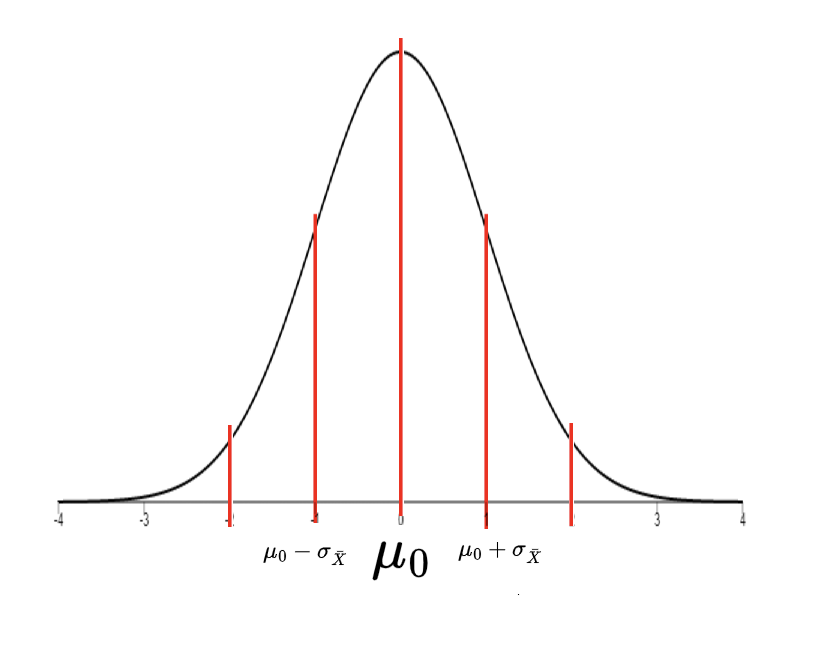
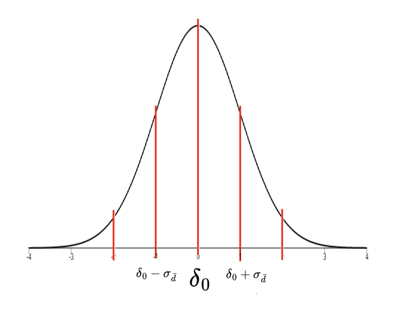

3 Univariate Hypothesis Testing
3.1 Null Hypothesis Significance Testing
The central dogma of statistics is to make estimates about the population based on samples. Null Hypothesis Significance Testing (NHST) is a widely used statistical approach for testing the validity of a claim or hypothesis about a population based on sample data. The process involves comparing the observed data to what would be expected under a null hypothesis, which usually assumes no effect or relationship between variables.
Null Hypothesis
The null hypothesis (denoted as \(H_0\)) is usually a statement of no effect or no difference. It represents the default assumption that there is no relationship between the variables under investigation or that the treatment has no effect.
Alternative Hypothesis
The alternative hypothesis (denoted as \(H_a\)) is a statement that contradicts the null hypothesis. It represents the claim that there is a relationship between the variables or that the treatment has an effect. The alternative hypothesis is what researchers hope to provide evidence for through the process of hypothesis testing.
3.1.1 The Process of Null Hypothesis Significance Testing
State the null hypothesis (\(H_0\)) and alternative hypothesis (\(H_a\)). The null hypothesis is a statement of no effect or relationship between the variables being tested, while the alternative hypothesis is a statement that claims some effect or relationship between the variables.
Choose a significance level. The significance level, denoted by \(\alpha\), is the probability of rejecting the null hypothesis when it is true. The most commonly used significance level is 0.05
Collect data and calculate the test statistic. Gather your sample data and perform the appropriate statistical test to calculate the test statistic. The test statistic is a numerical value that measures the difference between the observed data and what would be expected under the null hypothesis. Different tests use different test statistics meaning each one is denoted differently dependent on which test. Common test statistics include \(z\), \(t\), \(F\), or \(\chi^2\).
Determine the p-value. The p-value, denoted as \(p\), is the probability of observing a test statistic as extreme or more extreme than the one calculated from the sample data, assuming the null hypothesis is true. It quantifies the evidence against the null hypothesis. Lower p-values indicate stronger evidence against the null hypothesis since they imply that the observed results are less likely to have occurred by chance alone under the null hypothesis. In other words, a smaller p-value suggests that the observed effect or relationship between the variables is more likely to be genuine and not just a random occurrence. Conversely, higher p-values indicate weaker evidence against the null hypothesis. This means that the observed results are more likely to have occurred by chance under the null hypothesis, and there is insufficient evidence to suggest that the effect or relationship is genuine.
Compare the p-value to the significance level (\(\alpha\)). If the p-value is less than or equal to the chosen significance level (\(p \leq α\)), then reject the null hypothesis in favor of the alternative hypothesis. This implies that there is statistically significant evidence to support the claim made by the alternative hypothesis. If the p-value is greater than the significance level (\(p > α\)), then do not reject the null hypothesis, as there is not enough evidence to support the alternative hypothesis
Interpret the results and draw conclusions. Based on the comparison between the p-value and the significance level, make a conclusion about the null hypothesis. If you rejected the null hypothesis, this suggests the alternative hypothesis is supported by the data. If you failed to reject the null hypothesis, this means there is insufficient evidence to support the alternative hypothesis. Keep in mind that failing to reject the null hypothesis does not prove it is true; it simply means that the data does not provide strong evidence against it.
It is crucial to note that failing to reject the null hypothesis does not prove it is true; rather, it indicates that there is not enough evidence to conclude that the alternative hypothesis is true. Additionally, the p-value is subject to various limitations and potential misinterpretations, so it is essential to consider effect sizes, confidence intervals, and other aspects of the data when making conclusions from hypothesis testing.
3.2 Parametric Tests for Comparing Means
Parametric tests are statistical procedures that make specific assumptions about the parameters or the distribution of the populations from which the data is drawn. They are powerful and can provide more reliable results when the assumptions are met. The most common type of parametric test involves the comparison of means.
3.2.1 One-Sample Test
A one-sample test is used when you have raw data and a population mean. This kind of test aims to determine whether there is a statistically significant difference between the mean of the sample and the known population mean. One-sample tests are particularly useful when you want to test a specific hypothesis about a population mean.
- Example Usage: A researcher wants to determine if the average height of a specific type of tree in a national park differs from the known average height of that type of tree worldwide.
3.2.2 Two-Sample Tests
Two-sample tests are utilized when we are interested in comparing the difference of means or the mean of the differences of two different groups or samples.
Paired Samples Test
A paired samples test, also known as a dependent samples test or paired test, is used when you have two related samples or pairs of samples. This test is commonly used in ‘before-and-after’ scenarios where the same group is tested twice, under different conditions. The paired samples test assesses if the means of these two samples significantly differ by comparing the mean of the differences.
- Example Usage: A researcher wants to assess the effect of a new teaching method on students’ performance by comparing test scores before and after the implementation of the new method.
Independent Samples Test
An independent samples test, also known as two sample test, is used when you have two independent samples and aim to compare their means. The samples are independent in the sense that the selection of individuals in one group does not influence the selection of individuals in the other group. This test investigates if the means of these two independent samples significantly differ by comparing the difference of the means.
- Example Usage: A researcher wants to compare the average heights of two different species of trees to determine if one species tends to be taller than the other.
3.3 z-tests
3.3.1 One-Sample Test
A one-sample z-test is used to compare the mean of a sample to a specified value. It is a parametric test that assumes the population is normally distributed and the population standard deviation is known. The test statistic for a one-sample z-test is the z-score, which is calculated using the sample mean, the population mean, and the population standard deviation.
\[ \sigma = \text{known population standard deviation} \]
Set of Hypotheses: For a one-sample z-test, the null hypothesis (\(H_0\)) is that the population mean (\(\mu\)) is equal to a specified value (\(\mu_0\)). The alternative hypothesis (\(H_a\)) is that the population mean (\(\mu\)) is not equal to the specified value (\(\mu_0\)).
\[ \begin{align*} H_0: \mu = \mu_0\\ \;\;\;\;\; H_a: \mu \neq \mu_0 \end{align*} \]
Significance Level:
The significance level (\(\alpha\)) is the probability of rejecting the null hypothesis when it is true. We will use the most commonly used significance level, 0.05.
\[ \alpha = 0.05 \]
Making the Sampling Distribution
Imagine we took a million samples of the population. Each sample would have a slightly different sample mean. This is called a sampling distribution. This is useful since we can use the sampling distribution to calculate the probability of obtaining a sample mean as extreme or more extreme than what we would expect. Since sampling a population a million times is not feasible, we can use the Central Limit Theorem to create a sampling distribution of the mean. The Central Limit Theorem states that the sampling distribution of the mean will be normally distributed with a mean equal to the population mean and a standard deviation equal to the population standard deviation divided by the square root of the sample size. Thus the standard deviation of the sampling distribution of \(\bar{X}\) would be equal to \(\sigma_{\bar{X}}\)
\[ \sigma_{\bar{X}} = \frac{\sigma}{\sqrt{n}} \]
Under the null hypothesis, the sampling distribution of the mean would be centered at \(\mu_0\), rather than the actual population mean, \(\mu\). We do this because we are assuming that the null hypothesis is true. This is useful because we can see if it is probable that our sample would have come from a population with a mean equal to \(\mu_0\)- meaning if our sample mean is significantly different from \(\mu_0\), we have found something interesting.
To clarify, this null distribution is what the distribution of test statistics would look like if the null hypothesis were true. The null distribution is a normal distribution with a mean equal to \(\mu_0\) and a standard deviation equal to \(\sigma_{\bar{X}}\).
Below is a visualization of the hypothesized null distribution

Our Sample
The sample mean (\(\bar{X}\)) is the average of all the values (\(X_i\)’s’) in the sample that we collected. It is calculated by summing up all the values in the sample and dividing by the sample size (\(n\)).
\[ \bar{X} = \frac{\sum_{i=1}^{n}{X_i}}{n} \]
Our Sample’s Test-Statistic:
We have just caluclated the sample mean, \(\bar{X}\). We hypothesized that the population mean is equal to a specified value, \(\mu_0\). We want to know if the sample mean is significantly different from the population mean. We can calculate our test-statistic, the z-score, to find out where on the sampling distribution our sample mean lies. The z-score is calculated using the sample mean, the population mean, and the population standard deviation.
\[ z = \frac{\bar{X} - \mu_0}{\sigma_{\bar{X}}} \]
Calculating the p-value In the context of a z-test, we use a standard normal distribution to derive a p-value. We begin by standardizing our test statistic (the sample mean) to a z-score using the population mean and standard deviation. This z-score can then be used to find the p-value of our test.
Let \(Z \sim \mathcal{N}(0,1)\) be a standard normal random variable and \(z\) be the observed z-score.
Given this observed z-score, we can then compute the p-value, which is the probability of observing a z-score as extreme as \(z\) under the null hypothesis.
For a two-tailed z-test (where we’re testing for a difference in either direction): When \(H_a: \mu \neq \mu_0\), then \(p = 2 \times (1 - \text{Pr}(Z \leq |z|))\)
For a right-tailed z-test (where we’re testing for a difference in the positive direction): When \(H_a: \mu > \mu_0\), then \(p = 1 - \text{Pr}(Z \leq z)\)
For a left-tailed z-test (where we’re testing for a difference in the negative direction): When \(H_a: \mu < \mu_0\), then \(p = \text{Pr}(Z \leq z)\)
Applet to calculate the p-value
3.3.2 Paired-Samples Test
A paired-samples z-test, also known as a dependent sample z-test, is used to compare the mean differences of two related groups to assess whether the mean difference between paired observations in the population is significantly different from a number (usually zero). This test assumes the differences between pairs are normally distributed and the population standard deviation of the differences is known. The test statistic for a paired-samples z-test is the z-score, which is calculated using the sample mean difference, the population mean difference, and the population standard deviation of the differences.
\[ \sigma_d = \text{known population standard deviation of differences} \]
Additionally, the population mean difference (\(\mu_d\)) is calculated by taking the mean of all the differences between pairs in the population. This is done by subtracting the second value in each pair from the first value in each pair and then taking the mean of all the differences. \[ \mu_d = \frac{1}{N} \sum_{i=1}^{N} d_i \;\;\;\text{where}\;\; d_i = X_{2i} - X_{1i} \]
Where \(d_i\) is the list of differences between pairs for the whole population and \(N\) is the number of pairs in the population.
Set of Hypotheses: For a paired-samples z-test, the null hypothesis (\(H_0\)) is that the population mean difference (\(\mu_d\)) is equal to \(\delta_0\), usually 0. The alternative hypothesis (\(H_a\)) is that the population mean difference is not equal to \(\delta_0\).
\[ \begin{align*} H_0: \mu_d = \delta_0\\ H_a: \mu_d \neq \delta_0 \end{align*} \]
Significance Level:
The significance level (\(\alpha\)) is the probability of rejecting the null hypothesis when it is true. We will use the most commonly used significance level, 0.05.
\[ \alpha = 0.05 \]
Making the Sampling Distribution
Imagine we took a million samples of pairs from the population. Each sample of pairs would have a slightly different mean difference. This is the sampling distribution for a paired test. This is useful since we can use the sampling distribution to calculate the probability of obtaining a sample mean difference as extreme or more extreme than what we would expect. Since sampling a population a million times is not feasible, we can use the Central Limit Theorem to create a sampling distribution of the mean difference. The Central Limit Theorem states that the sampling distribution of the mean difference will be normally distributed with a mean equal to the population mean difference and a standard deviation equal to the population standard deviation of the differences divided by the square root of the number of pairs. Thus the standard deviation of the sampling distribution of \(\bar{d}\) would be equal to \(\sigma_{\bar{d}}\)
\[ \sigma_{\bar{d}} = \frac{\sigma_d}{\sqrt{n}} \]
Under the null hypothesis, the sampling distribution of the mean difference would be centered at \(\delta_0\), rather than the actual population mean difference, \(\mu_d\). We do this because we are assuming that the null hypothesis is true. This is useful because we can see if it is probable that our sample would have come from a population with a mean difference equal to \(\delta_0\) - meaning if our sample mean difference is significantly different from \(\delta_0\), we have found something interesting.
To clarify, this null distribution is what the distribution of test statistics would look like if the null hypothesis were true. The null distribution is a normal distribution with a mean equal to \(\delta_0\) and a standard deviation equal to \(\sigma_{\bar{d}}\).

Our Sample
The sample mean difference (\(\bar{d}\)) is the average of all the differences (\(d_i\)’s) in the sample that we collected. It is calculated by summing up all the differences in the sample and dividing by the number of pairs (\(n\)).
\[ \bar{d} = \frac{\sum_{i=1}^{n}{d_i}}{n} \;\;\;\text{where}\;\; d_i = X_{2i} - X_{1i} \]
Our Sample’s Test-Statistic:
We have just calculated the sample mean difference, \(\bar{d}\). We hypothesized that the population mean difference is equal to a \(\delta_0\). Since want to know if the sample mean difference is significantly different from \(\delta_0\), we can calculate our test-statistic, the z-score, to find out where on the sampling distribution our sample mean difference lies. The z-score is calculated using the sample mean difference, the population mean difference (\(\delta_0\)), and the population standard deviation of differences.
\[ z = \frac{\bar{d}-\delta_0}{\sigma_{\bar{d}}} \]
Calculating the p-value In the context of a z-test, we use a standard normal distribution to derive a p-value. We begin by standardizing our findings (the sample mean difference) to our z-score test statistic using the population mean difference (\(\delta_0\)), and the population standard deviation of differences. This z-score can then be used to find the p-value of our test.
Let \(Z \sim \mathcal{N}(0,1)\) be a standard normal random variable and \(z\) be the observed z-score.
Given this observed z-score, we can then compute the p-value, which is the probability of observing a z-score as extreme as \(z\) under the null hypothesis.
For a two-tailed z-test (where we’re testing for a difference in either direction): When \(H_a: \mu_d \neq \delta_0\), then \(p = 2 \times (1 - \text{Pr}(Z \leq |z|))\)
For a right-tailed z-test (where we’re testing for a difference in the positive direction): When \(H_a: \mu_d > \delta_0\), then \(p = 1 - \text{Pr}(Z \leq z)\)
For a left-tailed z-test (where we’re testing for a difference in the negative direction): When \(H_a: \mu_d < \delta_0\), then \(p = \text{Pr}(Z \leq z)\)
Applet to calculate the p-value
3.3.3 Independent-Samples Test
An independent-samples z-test, also known as a two-sample z-test, is used to compare the means of two independent groups to assess whether there is a statistically significant difference between the two population means. This test assumes both populations are normally distributed, and the population standard deviations are known.
Each group has its own population standard deviation:
\[ \sigma_1 = \text{known population standard deviation of group 1} \] \[ \sigma_2 = \text{known population standard deviation of group 2} \]
Set of Hypotheses: For an independent-samples z-test, the null hypothesis (\(H_0\)) is that the difference between the population means (\(\mu_1 - \mu_2\)) is equal to a specified value, usually zero. The alternative hypothesis (\(H_a\)) is that the difference between the population means is not equal to this specified value.
\[ \begin{align*} H_0: \mu_1 - \mu_2 = \delta_0\\ \;\;\;\;\;\; H_a: \mu_1 - \mu_2 \neq \delta_0 \end{align*} \]
Significance Level:
The significance level (\(\alpha\)) is the probability of rejecting the null hypothesis when it is true. We will use the most commonly used significance level, 0.05.
\[ \alpha = 0.05 \]
Making the Sampling Distribution
Similar to the tests above, if we took a million samples of two independent groups from the population, each sample would have a slightly different difference in means. This is the sampling distribution for an independent-samples test. This is useful since we can use the sampling distribution to calculate the probability of obtaining a difference in means as extreme or more extreme than what we would expect. Since sampling a population a million times is not feasible, we can use the Central Limit Theorem to create a sampling distribution of the difference in means. The Central Limit Theorem states that the sampling distribution of the difference in means will be normally distributed with a mean equal to the difference in population means and a standard deviation equal to the square root of the sum of the squares of the population standard deviations divided by the square root of the sample sizes. Thus the standard deviation of the sampling distribution of \(\bar{X_1} - \bar{X_2}\) would be equal to \(\sigma_{\bar{X_1} - \bar{X_2}}\)
The standard error of the difference in sample means can be calculated from the population standard deviations of the two groups and the sizes of the two groups (\(n_1\) and \(n_2\)). This is the standard deviation of the sampling distribution of the difference in sample means.
\[ \sigma_{\bar{X_1} - \bar{X_2}} = \sqrt{\left(\frac{\sigma_1^2}{n_1}\right) + \left(\frac{\sigma_2^2}{n_2}\right)} \]
Our Sample
The sample means (\(\bar{X_1}\) and \(\bar{X_2}\)) are the averages of all the values in each group. They are calculated by summing up all the values in each group and dividing by the size of each group.
\[ \bar{X_1} = \frac{\sum_{i=1}^{n_1}{X_{1i}}}{n_1} \]
\[ \bar{X_2} = \frac{\sum_{i=1}^{n_2}{X_{2i}}}{n_2} \]
Our Sample’s Test-Statistic:
The test-statistic, the z-score, is calculated using the difference of the sample means, the hypothesized difference of the population means (which we’ve assumed to be \(\delta_0\)), and the standard error.
\[ z = \frac{(\bar{X_1} - \bar{X_2}) - \delta_0}{\sigma_{\bar{X_1} - \bar{X_2}}} \]
Calculating the p-value In the context of two independent samples z-test, we use a standard normal distribution to derive a p-value. We begin by standardizing our test statistic (the difference in sample means) to a z-score using the hypothesized difference in population means and the standard error. This z-score can then be used to find the p-value of our test.
Let’s denote the z-score for this test as \(z\) and standard normal random variable as \(Z \sim \mathcal{N}(0,1)\). The z-score is calculated considering the difference between sample means, the hypothesized difference (often zero), and the standard error of the difference between means. Once we have the calculated z-score, we can use it to find the p-value of our test. The p-value, similar to the one-sample case, is the probability of observing a z-score as extreme as \(z\) under the null hypothesis, and its calculation depends on the alternative hypothesis:
- For a two-tailed z-test (where we’re testing for a difference in either direction): When \(H_a: \mu_1 \neq \mu_2\), then \(p = 2 \times (1 - \text{Pr}(Z \leq |z|))\)
- For a right-tailed z-test (where we’re testing for a difference in the positive direction): When \(H_a: \mu_1 > \mu_2\), then \(p = 1 - \text{Pr}(Z \leq z)\)
- For a left-tailed z-test (where we’re testing for a difference in the negative direction): When \(H_a: \mu_1 < \mu_2\), then \(p = \text{Pr}(Z \leq z)\)
Applet to calculate the p-value
Cohen’s d Effect Size
We often want to measure the size of the difference between our two groups, not just whether this difference is statistically significant. This is where effect size comes in.
For a two-sample z-test, we can calculate the effect size using Cohen’s d. It is defined as the difference between two means divided by a standard deviation for the data.
\[ d = \frac{(\bar{X_1} - \bar{X_2})}{\sqrt{\left(\frac{\sigma_1^2}{2}\right) + \left(\frac{\sigma_2^2}{2}\right)}} \]
Cohen’s d is an appropriate effect size for the comparison between two means.
3.4 t-tests
3.4.1 One-Sample Test
A one-sample t-test is used to compare the mean of a sample to a specified value. It is a parametric test that assumes the population is normally distributed and that the population standard deviation is unknown. The test statistic for a one-sample t-test is the t-score, which is calculated using the sample mean, the specified value, and the sample standard deviation.
Set of Hypotheses: For a one-sample t-test, the null hypothesis (\(H_0\)) is that the population mean (\(\mu\)) is equal to a specified value (\(\mu_0\)). The alternative hypothesis (\(H_a\)) is that the population mean (\(\mu\)) is not equal to the specified value (\(\mu_0\)).
\[ \begin{align*} H_0: \mu = \mu_0\\ \;\;\;\;\; H_a: \mu \neq \mu_0 \end{align*} \]
Significance Level:
The significance level (\(\alpha\)) is the probability of rejecting the null hypothesis when it is true. We will use the most commonly used significance level, 0.05.
\[ \alpha = 0.05 \]
Making the Sampling Distribution
Just like with the z-test, we can imagine taking many samples from the population. Each sample would have a slightly different mean. These sample means would form a distribution, called the sampling distribution. Due to the Central Limit Theorem, the sampling distribution of the sample means will be approximately normally distributed, with a mean equal to the population mean and a standard error (SE) equal to the sample standard deviation divided by the square root of the sample size. Since we are estimating the normal distribution with the sample standard deviation, we use the t-distribution instead of the normal distribution to estimate the sampling distribution.
\[ s_{\bar{X}} = \frac{s}{\sqrt{n}} \]
Under the null hypothesis, the sampling distribution of the mean would be centered at \(\mu_0\), rather than the actual population mean, \(\mu\). We do this because we are assuming that the null hypothesis is true. This is useful because we can see if it is probable that our sample would have come from a population with a mean equal to \(\mu_0\)- meaning if our sample mean is significantly different from \(\mu_0\), we have found something interesting.
To clarify, this null distribution is what the distribution of test statistics would look like if the null hypothesis were true. The null distribution is a normal distribution with a mean equal to \(\mu_0\) and a standard deviation equal to \(s_{\bar{X}}\). Since we are estimating the population standard deviation with the sample standard deviation, we use the t-distribution instead of the normal distribution to estimate the sampling distribution.
Below is a visualization of the hypothesized null distribution
Our Sample
The sample mean (\(\bar{X}\)) is the average of all the values (\(X_i\)’s’) in the sample that we collected. It is calculated by summing up all the values in the sample and dividing by the sample size (\(n\)).
\[ \bar{X} = \frac{\sum_{i=1}^{n}{X_i}}{n} \]
Our Sample’s Test-Statistic:
We have just caluclated the sample mean, \(\bar{X}\). We hypothesized that the population mean is equal to a specified value, \(\mu_0\). We want to know if the sample mean is significantly different from the population mean. We can calculate our test-statistic, the t-value, to find out where on the sampling distribution our sample mean lies. The t-value is calculated using the sample mean, the population mean, and the sample standard deviation.
\[ t = \frac{\bar{X} - \mu_0}{s_{\bar{X}}} \]
Calculating the p-value In the context of a one-sample t-test, we use a t-distribution to derive a p-value. We begin by standardizing our test statistic (the sample mean) to a t-score using the hypothesized population mean and the sample standard deviation. This t-score can then be used to find the p-value of our test.
Let \(T \sim \mathcal{t}_{(n-1)}\) be a t-distributed random variable with \(n-1\) degrees of freedom and \(t\) be the observed t-score. Given this observed t-score, we can then compute the p-value, which is the probability of observing a t-score as extreme as \(t\) under the null hypothesis.
- For a two-tailed t-test (where we’re testing for a difference in either direction): When \(H_a: \mu \neq \mu_0\), then \(p = 2 \times (1 - \text{Pr}(T \leq |t|))\)
- For a right-tailed t-test (where we’re testing for a difference in the positive direction): When \(H_a: \mu > \mu_0\), then \(p = 1 - \text{Pr}(T \leq t)\)
- For a left-tailed t-test (where we’re testing for a difference in the negative direction): When \(H_a: \mu < \mu_0\), then \(p = \text{Pr}(T \leq t)\)
Applet to calculate the p-value
3.4.2 Paired-Samples Test
A paired-samples t-test, also known as a dependent sample t-test, is used to compare the mean differences of two related groups to assess whether the mean difference between paired observations in the population is significantly different from a number (usually zero). This test assumes the differences between pairs are normally distributed and the population standard deviation of the differences is unknown. The test statistic for a paired-samples t-test is the t-value, which is calculated using the sample mean difference, the population mean difference, and the population standard deviation of the differences.
Additionally, the population mean difference (\(\mu_d\)) is calculated by taking the mean of all the differences between pairs in the population. This is done by subtracting the second value in each pair from the first value in each pair and then taking the mean of all the differences. \[ \mu_d = \frac{1}{N} \sum_{i=1}^{N} d_i \;\;\;\text{where}\;\; d_i = X_{2i} - X_{1i} \]
Where \(d_i\) is the list of differences between pairs for the whole population and \(N\) is the number of pairs in the population.
Set of Hypotheses: For a paired-samples t-test, the null hypothesis (\(H_0\)) is that the population mean difference (\(\mu_d\)) is equal to \(\delta_0\), usually 0. The alternative hypothesis (\(H_a\)) is that the population mean difference is not equal to \(\delta_0\).
\[ \begin{align*} H_0: \mu_d = \delta_0\\ H_a: \mu_d \neq \delta_0 \end{align*} \]
Significance Level:
The significance level (\(\alpha\)) is the probability of rejecting the null hypothesis when it is true. We will use the most commonly used significance level, 0.05.
\[ \alpha = 0.05 \]
Making the Sampling Distribution
Imagine we took a million samples of pairs from the population. Each sample of pairs would have a slightly different mean difference. This is the sampling distribution for a paired test. This is useful since we can use the sampling distribution to calculate the probability of obtaining a sample mean difference as extreme or more extreme than what we would expect. Since sampling a population a million times is not feasible, we can use the Central Limit Theorem to create a sampling distribution of the mean difference. The Central Limit Theorem states that the sampling distribution of the mean difference will be normally distributed with a mean equal to the population mean difference and a standard deviation equal to the population standard deviation of the differences divided by the square root of the number of pairs. Thus the standard deviation of the sampling distribution of \(\bar{d}\) would be equal to \(s_{\bar{d}}\)
\[ s_{\bar{d}} = \frac{s_d}{\sqrt{n}} \]
Under the null hypothesis, the sampling distribution of the mean difference would be centered at \(\delta_0\), rather than the actual population mean difference, \(\mu_d\). We do this because we are assuming that the null hypothesis is true. This is useful because we can see if it is probable that our sample would have come from a population with a mean difference equal to \(\delta_0\) - meaning if our sample mean difference is significantly different from \(\delta_0\), we have found something interesting.
To clarify, this null distribution is what the distribution of test statistics would look like if the null hypothesis were true. The null distribution is a normal distribution with a mean equal to \(\delta_0\) and a standard deviation equal to \(s_{\bar{d}}\). Since we are estimating the population standard deviation with the sample standard deviation, we use the t-distribution instead of the normal distribution to estimate the sampling distribution.
Our Sample
The sample mean difference (\(\bar{d}\)) is the average of all the differences (\(d_i\)’s) in the sample that we collected. It is calculated by summing up all the differences in the sample and dividing by the number of pairs (\(n\)).
\[ \bar{d} = \frac{\sum_{i=1}^{n}{d_i}}{n} \;\;\;\text{where}\;\; d_i = X_{2i} - X_{1i} \]
Our Sample’s Test-Statistic:
We have just calculated the sample mean difference, \(\bar{d}\). We hypothesized that the population mean difference is equal to a \(\delta_0\). Since want to know if the sample mean difference is significantly different from \(\delta_0\), we can calculate our test-statistic, the t-value, to find out where on the sampling distribution our sample mean difference lies. The t-value is calculated using the sample mean difference, the population mean difference (\(\delta_0\)), and the population standard deviation of differences.
\[ t = \frac{\bar{d}-\delta_0}{s_{\bar{d}}} \]
Calculating the p-value In the context of a t-test, we use a standard normal distribution to derive a p-value. We begin by standardizing our findings (the sample mean difference) to our t-value test statistic using the population mean difference (\(\delta_0\)), and the population standard deviation of differences. This t-value can then be used to find the p-value of our test.
Let \(T \sim \mathcal{t}_{(n-1)}\) be a t-distributed random variable with \(n-1\) degrees of freedom and \(t\) be the observed t-score. Given this observed t-score, we can then compute the p-value, which is the probability of observing a t-score as extreme as \(t\) under the null hypothesis.
For a two-tailed t-test (where we’re testing for a difference in either direction): When \(H_a: \mu_d \neq \delta_0\), then \(p = 2 \times (1 - \text{Pr}(T \leq |t|))\)
For a right-tailed t-test (where we’re testing for a difference in the positive direction): When \(H_a: \mu_d > \delta_0\), then \(p = 1 - \text{Pr}(T \leq t)\)
For a left-tailed t-test (where we’re testing for a difference in the negative direction): When \(H_a: \mu_d < \delta_0\), then \(p = \text{Pr}(T \leq t)\)
Applet to calculate the p-value
3.4.3 Independent-Samples Test
An independent-samples t-test, also known as a two-sample t-test, is used to compare the means of two independent groups to assess whether there is a statistically significant difference between the two population means. This test assumes both populations are normally distributed, and the population standard deviations are unknown.
Each group has its own population standard deviation:
Set of Hypotheses: For an independent-samples t-test, the null hypothesis (\(H_0\)) is that the difference between the population means (\(\mu_1 - \mu_2\)) is equal to a specified value, usually zero. The alternative hypothesis (\(H_a\)) is that the difference between the population means is not equal to this specified value.
\[ \begin{align*} H_0: \mu_1 - \mu_2 = \delta_0\\ \;\;\;\;\;\; H_a: \mu_1 - \mu_2 \neq \delta_0 \end{align*} \]
Significance Level:
The significance level (\(\alpha\)) is the probability of rejecting the null hypothesis when it is true. We will use the most commonly used significance level, 0.05.
\[ \alpha = 0.05 \]
Making the Sampling Distribution
Similar to the tests above, if we took a million samples of two independent groups from the population, each sample would have a slightly different difference in means. This is the sampling distribution for an independent-samples test. This is useful since we can use the sampling distribution to calculate the probability of obtaining a difference in means as extreme or more extreme than what we would expect. Since sampling a population a million times is not feasible, we can use the Central Limit Theorem to create a sampling distribution of the difference in means. The Central Limit Theorem states that the sampling distribution of the difference in means will be normally distributed with a mean equal to the difference in population means and a standard deviation equal to the square root of the sum of the squares of the population standard deviations divided by the square root of the sample sizes. Thus the standard deviation of the sampling distribution of \(\bar{X_1} - \bar{X_2}\) would be equal to \(s_{\bar{X_1} - \bar{X_2}}\)
The standard error of the difference in sample means can be calculated from the population standard deviations of the two groups and the sizes of the two groups (\(n_1\) and \(n_2\)). This is the standard deviation of the sampling distribution of the difference in sample means.
\[ s_{\bar{X_1} - \bar{X_2}} = \sqrt{\left(\frac{s_1^2}{n_1}\right) + \left(\frac{s_2^2}{n_2}\right)} \]
Our Sample
The sample means (\(\bar{X_1}\) and \(\bar{X_2}\)) are the averages of all the values in each group. They are calculated by summing up all the values in each group and dividing by the size of each group.
\[ \bar{X_1} = \frac{\sum_{i=1}^{n_1}{X_{1i}}}{n_1} \]
\[ \bar{X_2} = \frac{\sum_{i=1}^{n_2}{X_{2i}}}{n_2} \]
Our Sample’s Test-Statistic:
The test-statistic, the t-value, is calculated using the difference of the sample means, the hypothesized difference of the population means (which we’ve assumed to be \(\delta_0\)), and the standard error.
\[ t = \frac{(\bar{X_1} - \bar{X_2}) - \delta_0}{s_{\bar{X_2} - \bar{X_1}}} \]
Calculating the p-value For two independent samples t-test, we use a t-distribution to derive a p-value. We begin by standardizing our test statistic (the difference in sample means) to a t-score using the hypothesized difference in population means and the standard error. This t-score can then be used to find the p-value of our test.
Let’s denote the t-score for this test as \(t\) and a t-distributed random variable with \(n_1 + n_2 - 2\) degrees of freedom as \(T \sim \mathcal{t}_{(n_1 + n_2 - 2)}\). The t-score is calculated considering the difference between sample means, the hypothesized difference (often zero), and the standard error of the difference between means. Once we have the calculated t-score, we can use it to find the p-value of our test. The p-value is the probability of observing a t-score as extreme as \(t\) under the null hypothesis, and its calculation depends on the alternative hypothesis:
- For a two-tailed t-test (where we’re testing for a difference in either direction): When \(H_a: \mu_1 \neq \mu_2\), then \(p = 2 \times (1 - \text{Pr}(T \leq |t|))\)
- For a right-tailed t-test (where we’re testing for a difference in the positive direction): When \(H_a: \mu_1 > \mu_2\), then \(p = 1 - \text{Pr}(T \leq t)\)
- For a left-tailed t-test (where we’re testing for a difference in the negative direction): When \(H_a: \mu_1 < \mu_2\), then \(p = \text{Pr}(T \leq t)\)
Just like the z-test, we compare the calculated p-value with our significance level to decide whether to reject or not reject the null hypothesis. If the p-value is less than the chosen significance level (often 0.05), then we reject the null hypothesis in favor of the alternative hypothesis. If the p-value is greater than the significance level, we do not reject the null hypothesis.
Applet to calculate the p-value
Cohen’s d Effect Size
We often want to measure the size of the difference between our two groups, not just whether this difference is statistically significant. This is where effect size comes in.
For a two-sample t-test, we can calculate the effect size using Cohen’s d. It is defined as the difference between two means divided by a standard deviation for the data.
\[ d = \frac{(\bar{X_1} - \bar{X_2})}{\sqrt{\left(\frac{s_1^2}{2}\right) + \left(\frac{s_2^2}{2}\right)}} \]
Cohen’s d is an appropriate effect size for the comparison between two means.